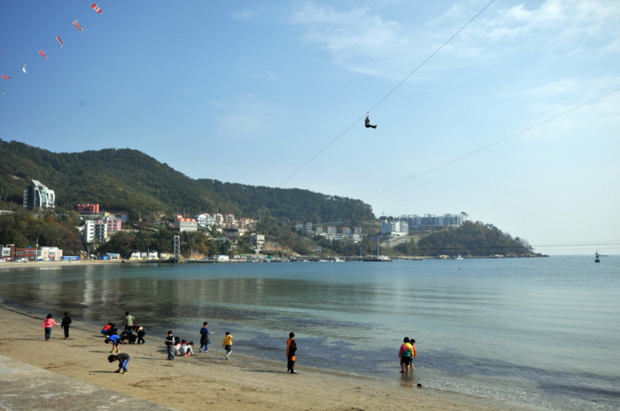
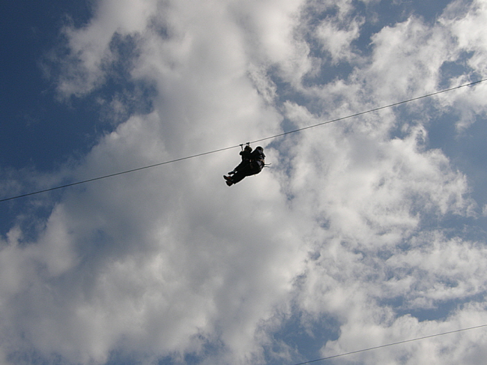
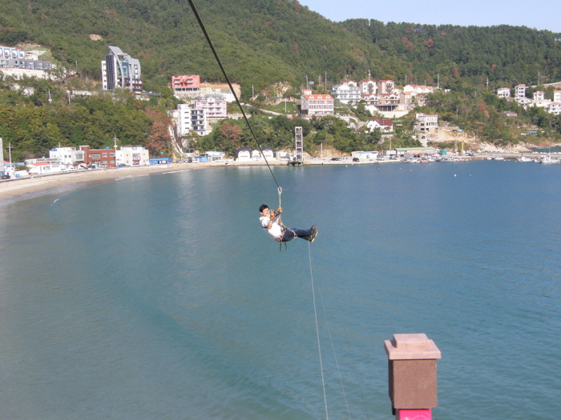
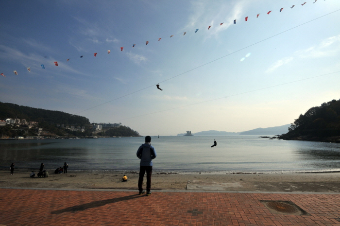

거제 덕포랜드 씨라인
   
지역 : 경남 거제
설명 : 집라인을 타고 덕포해수욕장 하늘 위를 가로지르는 짜릿함.
웹사이트 링크 1:
http://dukpoland.co.kr/
웹사이트 링크 2:
https://place.map.kakao.com/26303788
웹사이트 링크 3:
https://www.google.com/maps/place/%EB%8D%95%ED%8F%AC%EB%9E%9C%EB%93%9C+%EC%94%A8%EB%9D%BC%EC%9D%B8/@34.9108166,128.7082018,17z/data=!3m1!4b1!4m5!3m4!1s0x35692c48ac1c1d8b:0xe91d2848f8fbd56c!8m2!3d34.9108122!4d128.7103905?hl=ko